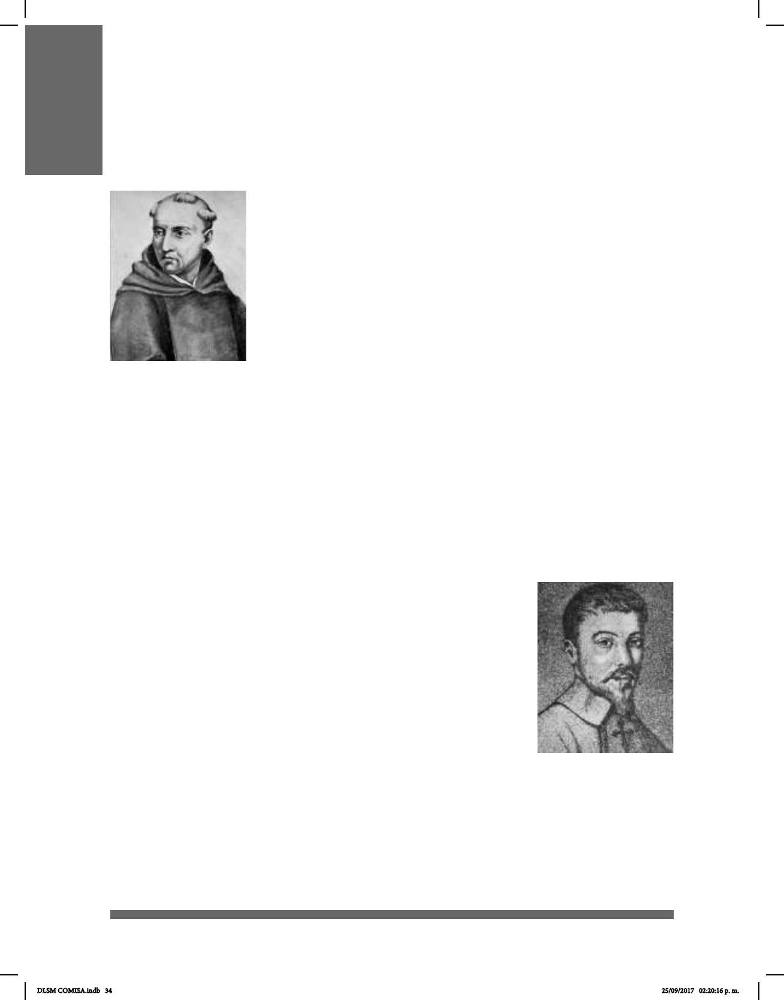

34
HISTORIA DEL LA LENGUA DE SEÑAS EN EL MUNDO
Nacido en Valladolid en 1520, Pedro Ponce de León fue el primer
educador de sordos. Estudió en Salamanca e ingresó
posteriormente a la orden benedictina viviendo en el monasterio
de Oña. Aunque la mayor parte de los datos acerca de su vida y
de su trabajo se han perdido, se sabe que Ponce de León
enseñó a los tres hijos sordos de Iñigo de Velasco, miembro de la
nobleza. Su buen trabajo está documentado en los libros del
monasterio en los que se señala, reriéndose a sus alumnos,
que podían participar en la misa, confesar, hablar griego,
latín, italiano y discutir sobre física y astronomía. Su método
incorporó la dactilología y las conguraciones
manuales delabecedario para enseñar la escritura y el habla. En aquel tiempo a los
niños sordos se les hablaba por medio de signos y escritura y se les pedía que
respondieran de forma oral.
Casi cuarenta años después de la muerte de Ponce de León, Juan Pablo Bonet
(1513-1633) publicó su Reducción de letras y arte para enseñar a hablar a los mudos en
1620 en el que explica los métodos que utiliza en la instrucción de los sordos.
Fue secretario de Bernardino Hernández de Velasco y probablemente se ocupó de la
educación de su hermano Luis, sordo a partir de los dos años.
A Manuel Ramírez de Carrión se le atribuye haberle
enseñado a leer, escribir, hablar, conversar con tal éxito que
no sintió que tuviera alguna otra deciencia salvo la sordera.
Del método educativo de Ramírez Carrión no sabemos nada.
Sólo tenemos mayor conocimiento de Juan Pablo Bonet,
considerado como uno de los primeros defensores de la
metodología oralista. Sus planteamientos son, sin embargo,
mucho más matizados y no duda en aceptar la comunicación
manual en las edades tempranas. Sostiene que la primera
tarea pedagógica consiste en aprender las letras del alfabeto
manual a través de su forma escrita.
Posteriormente, el maestro debe comenzar la enseñanza de
la pronunciación de los sonidos de las letras, continuando con
sílabas sin sentido y adentrándose después en las palabras concretas y en las
abstractas, para terminar con las estructuras gramaticales. En todo este proceso la
actilología ocupa un papel importante y las señas se incorporaban en la comunicación
para clasicar el signicado de las palabras.
Pedro Ponce de León
Juan Pablo Bonet
Los grandes personajes en el mundo de los sordos
DLSM COMISA.indb 34 25/09/2017 02:20:16 p. m.